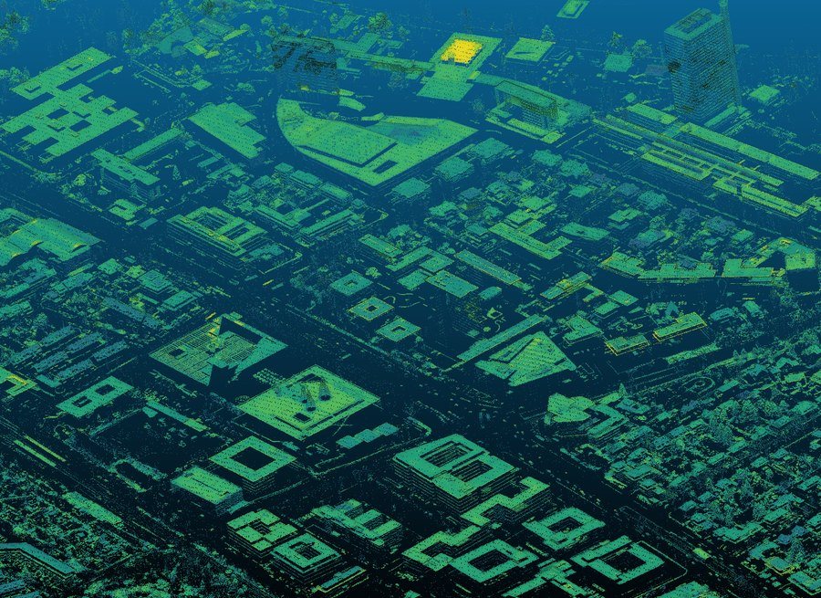
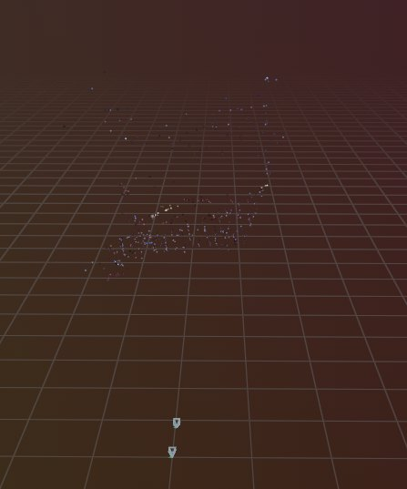

Projects
Robotics, vision and perception. Mostly written from scratch in C++ and Python.
Show: · · ·
 2026–present
2026–present
Open-Vocab Mobile Manipulation
Language-conditioned grasping on the Toyota HSR, driven by a scene graph.

2026–presentGeospatial LiDAR Pipeline
Streaming point-cloud processing across a 10 km Bonn corridor.

2025casualSfM
Incremental Structure-from-Motion, written from scratch and documented.
2026–present
EKF SLAM (slam-factory)
A filter-based SLAM framework with a clean core and a thin ROS 2 shell.
ROS 2 · Gazebo · OpenCV · Python
2024
BallBot
A mobile robot that finds a coloured ball and chases it.
MuJoCo · Python · SciPy
2024
UR5e IK Control in MuJoCo
Benchmarking three inverse-kinematics solvers on a 6-DOF arm.
ROS 2 · Gazebo · MQTT
2024
MQTT Remote Control of TurtleBot3
Driving a TurtleBot3 over the public internet.
The four main ones as a project graph, showing what they share, is on the home page.